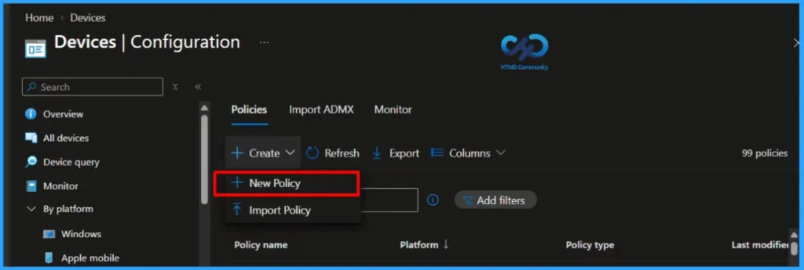
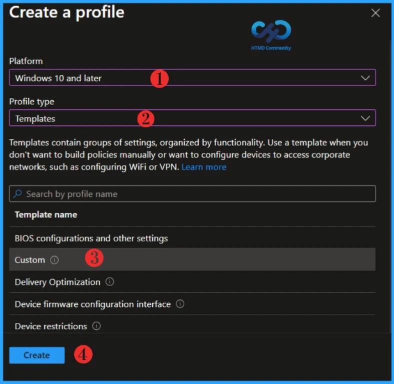
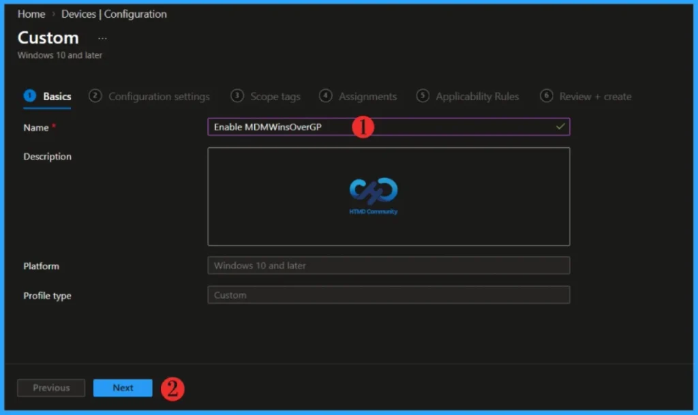
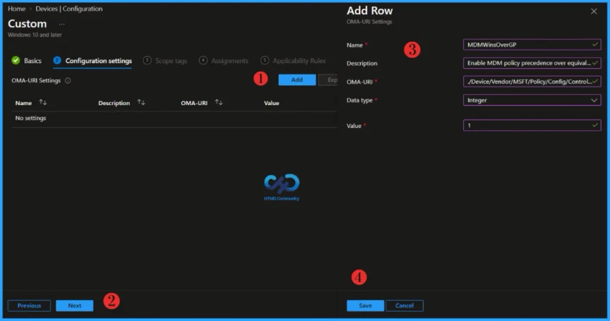
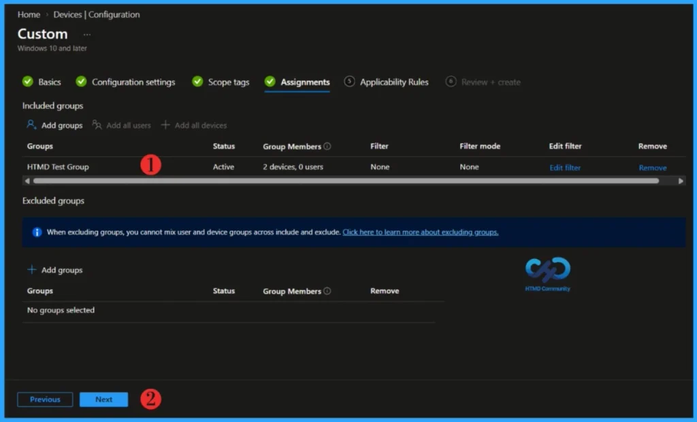
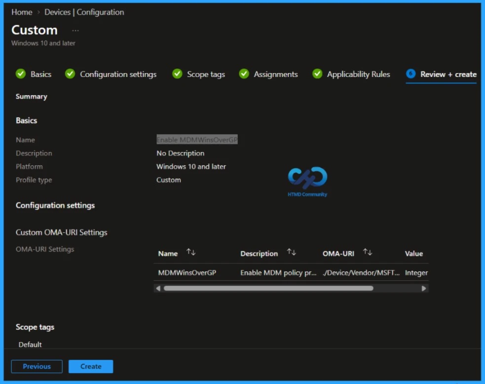
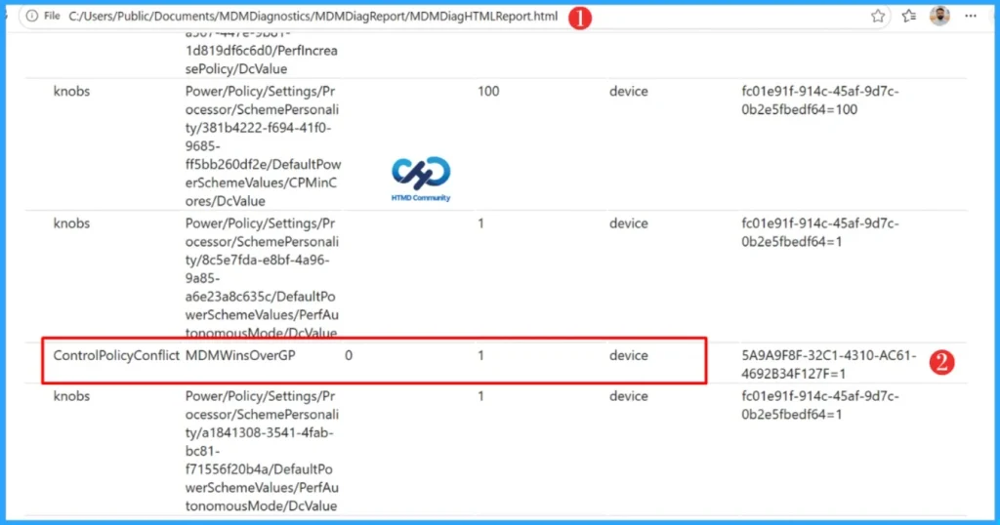

Key Takeaways
- Resolve Intune and Group Policy Conflicts using MDMWinsOverGP
- ControlPolicyConflict Policy CSP helps manage policy conflicts between MDM and traditional Group Policy on Windows devices.
- MDMWinsOverGP can make supported MDM policies take precedence over equivalent Group Policy settings.
- MDMWinsOverGP applies only to settings managed through the Windows Policy CSP, not every policy configured through Microsoft Intune.
- For Windows Update conflicts, Microsoft recommends using IgnoreWindowsUpdateGroupPolicies instead of MDMWinsOverGP
Managing Windows devices through Microsoft Intune becomes particularly interesting when organisations transition from traditional Group Policy management to modern MDM management. During this transition, the same Windows setting may sometimes be configured through both Group Policy and Intune. When that happens, administrators need to understand which management authority controls the setting and how Windows resolves the conflict.
Table of Contents
ControlPolicyConflict Policy CSP and MDMWinsOverGP in Microsoft Intune
The ControlPolicyConflict Policy CSP provides a mechanism called MDMWinsOverGP that can help in this situation. When configured correctly, it allows supported MDM policies to take precedence over equivalent Group Policy settings. However, there is an important limitation that administrators should understand: MDMWinsOverGP does not mean that every Intune policy automatically overrides every Group Policy setting. Its behavior is specifically tied to policies managed through the Windows Policy CSP.
What is the ControlPolicyConflict Policy CSP?
The Policy CSP is part of the Windows configuration service provider framework used by MDM solutions to configure Windows policies. Microsoft documents the Policy CSP as a mechanism enterprises can use to configure policies on Windows 10 and Windows 11 devices.
ControlPolicyConflict is an area within the Policy CSP designed to control how certain conflicts between MDM policies and traditional Group Policy are handled.
CSP path: ./Device/Vendor/MSFT/Policy/Config/ControlPolicyConflict/MDMWinsOverGPPlease note that the setting is device-scoped and is supported on Windows 10 version 1803 and later, including supported Pro, Enterprise, Education, and IoT Enterprise editions.
What is MDMWinsOverGP?
MDMWinsOverGP is designed for situations where an MDM-configured Policy CSP setting has an equivalent Group Policy configuration. The setting accepts two values.
| Value | Behaviour |
|---|---|
| 0 | Default behaviour. The Group Policy blocks introduced by MDMWinsOverGP are removed and saved GP policies can be restored. |
| 1 | Supported MDM Policy CSP settings take precedence and the corresponding Group Policy configuration is blocked. |
The default value is 0. When administrators configure the value as 1, Windows allows applicable MDM Policy CSP settings to take precedence over their Group Policy equivalents. This can be useful when an organization is gradually moving Windows configuration from Active Directory Group Policy to cloud-based management through Microsoft Intune.
Instead of allowing the old Group Policy configuration to interfere with a migrated Intune Policy CSP setting, MDMWinsOverGP can make the MDM-managed configuration take precedence where the Windows policy supports this behaviour.
Create MDMWinsOverGP Policy in Microsoft Intune
Now let’s configure the policy using Microsoft Intune. We will be using Intune Configuration profile templates and creating a custom profiles. Custom profiles are great when you want to use device settings and features that aren’t built into Intune.

Under Platform, choose Windows 10 and later and under Profile type, select Templates and Custom to proceed further. Click Create to proceed further.

When the Create policy wizard opens, navigate to the Basics tab and configure the required settings. Provide a unique and descriptive name for the policy in the Name field, and optionally add further details in the Description field. Once these entries are complete, select Next to continue with the policy creation process.

In the configuration settings section, select Add. The important configuration here is the OMA-URI: ./Device/Vendor/MSFT/Policy/Config/ControlPolicyConflict/MDMWinsOverGP.
| Setting | Value |
|---|---|
| Name | MDMWinsOverGP |
| Description | Enable MDM policy precedence over equivalent Group Policy |
| OMA-URI | ./Device/Vendor/MSFT/Policy/Config/ControlPolicyConflict/MDMWinsOverGP |
| Data type | Integer |
| Value | 1 |

Click Next to display the Scope tags page. Add the Scope tags if you wish, and click Next to assign the policy to computers. I will deploy it to the HTMD Test Group Device Group.
Read more : Intune Scope Tags Implementation Guide
Please take a moment to carefully review all the settings you’ve defined for the Enable MDMWinsOverGP Settings policy on the “Review + Create” page. When you’re ready, select “Create” to implement the changes.

Verify MDMWinsOverGP on the Windows Device
Deploying the profile successfully doesn’t complete our testing. We also need to check what Windows actually received. One of the useful options is the MDM Diagnostic Report. On the Windows device, navigate to Settings > Accounts > Access work or school.
Select the connected account and open the appropriate diagnostic information. The MDM Diagnostic Report provides information about applied configurations, configuration sources, policies, certificates, and other MDM-related information. More importantly for our scenario, Microsoft states that the report can include Group Policy settings blocked because the MDM equivalent is configured. This makes the report extremely useful when testing MDMWinsOverGP.

NOTE!: MDMWinsOverGP isn't a master switch that makes Microsoft Intune win over every Group Policy. Microsoft explicitly states that MDMWinsOverGP applies only to policies within the Policy CSP.Microsoft notes that the setting doesn't apply to equivalent configurations provided through other CSPs, such as Defender CSPAfter the device completes an Intune policy sync, generate the MDM Diagnostic Report and open MDMDiagHTMLReport.html. Search for MDMWinsOverGP under the managed policies section. As shown below, the ControlPolicyConflict MDMWinsOverGP policy reports a value of 1, confirming that the policy has been successfully applied to the Windows device.
What Happens When MDMWinsOverGP is Applied?
Windows maintains mappings between certain Policy CSP settings and their Group Policy equivalents. Microsoft documents several Policy DDF tags used to identify these relationships:
<MSFT:ADMXBacked>
<MSFT:ADMXMapped>
<MSFT:GPRegistryMappedName>
<MSFT:GPDBMappedName>
When MDMWinsOverGP is enabled, Windows can use these mappings to identify applicable policy conflicts. Microsoft also recommends applying the policy during every synchronisation, so Windows continues removing configurations that conflict with what MDM has applied. This helps refresh the current Policy Manager configuration and remove conflicting values introduced through Group Policy, scripts, or users.
Need Further Assistance or Have Technical Questions?
Join the LinkedIn Page and Telegram group to get the latest step-by-step guides and news updates. Join our Meetup Page to participate in User group meetings. Also, Join the WhatsApp Community to get the latest news on Microsoft Technologies. We are there on Reddit as well.Author
About the Author: Sujin Nelladath, a Microsoft Graph MVP with over 13 years of experience in Intune device management and Automation solutions, writes and shares his experiences with Microsoft device management technologies, Azure, DevOps, Graph API and PowerShell automation.